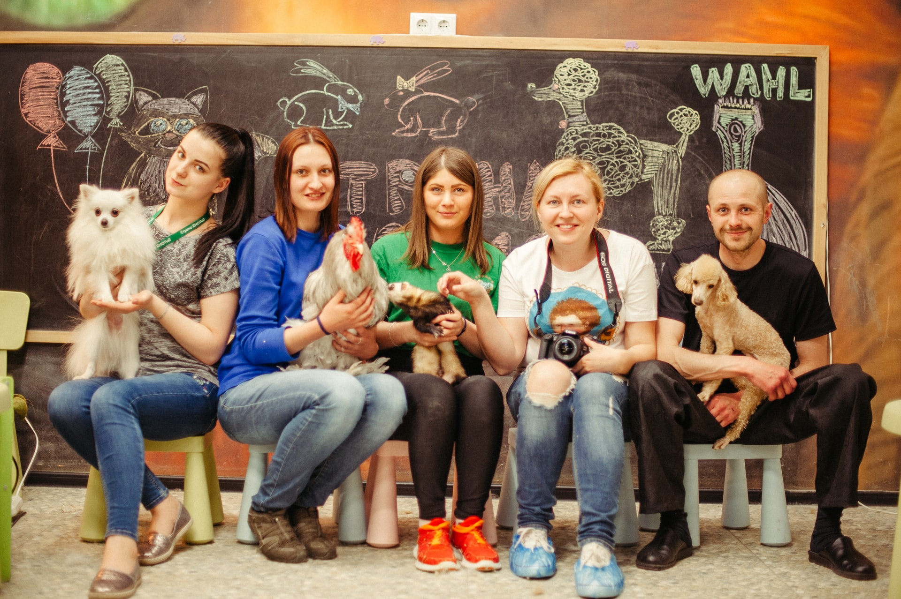
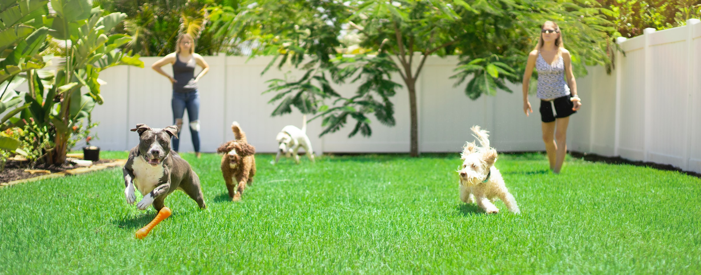
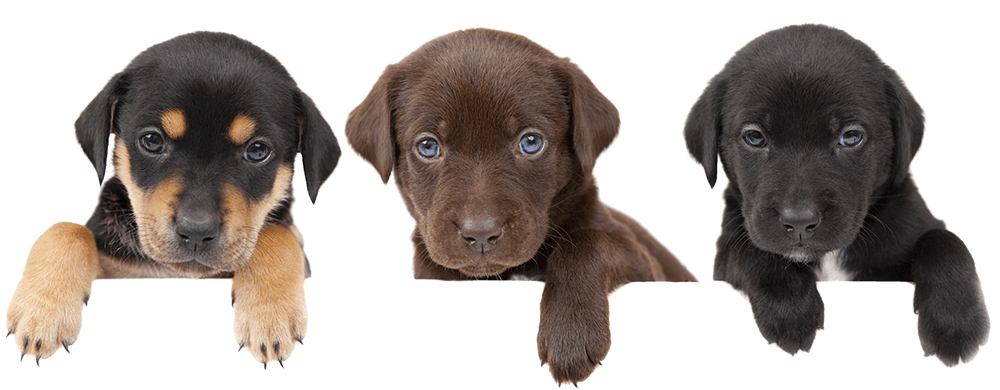

The Best For Family

Pets are part of family members and they will be treated as family members in Petsfamily salon! As
pets lover, Petsfamily is proud to provide thorough grooming services (including therapeutic
brushing and scissor finish) for all sizes and breeds of dogs. An accredited and experienced
professional, Petsfamily understands that you and your dog need to feel comfortable as at home.
Pride in Grooming is based in a calm and clean home setting in compliance with Unique Top Standards.
Petsfamily offers five starts services that you and your dog are sure to appreciate.
Unleash your dog's wellness and beauty!
Our Team
Petsfamily is a leading dog grooming salon in Sydney. Our groomers are all professional in pets
grooming with more then 5 years experience and the excellent grooming skills and eye for details.
They are here to provide top level service for your pets.

Pets Social

We also regularly organise pets social activities within our clinets. These activities have been
reciving lots of positive feedback. We are stongly recomend you to join us!
Service

We provide both IN STORE and MOBILE pets grooming service.
Why Clean Cut Grooming in store or mobile??
store
Same day service in most of cases you can wait in our reception area while
your dog getting groom Easy to access drop off and pick up less then 2 hours High quality grooming supply
and reasonable price multiple dog discount We have more experienced groomer to take care of dogs with
behavior issues variety of grooming equipment to serve all sizes from toy to giant offering high quality pet
supply.
Mobile:
Mobile grooming is more time efficient. No need to drop your dog off and
leave them at the groomer all day. You experience the convenience of us coming to you. One-on-one service
for your dog. No exposure to other dogs. Our van self-contained and fully equipped with the latest
technology..
Service & Price